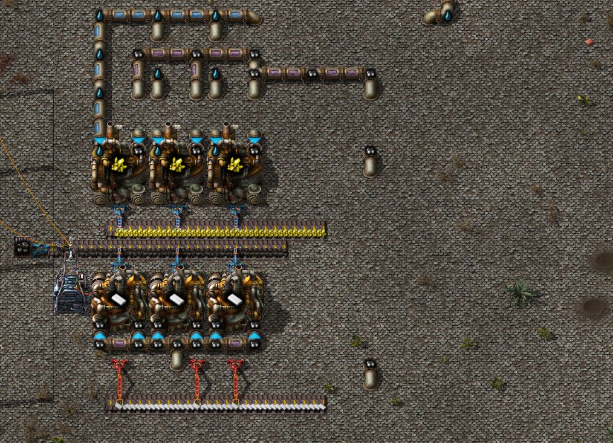
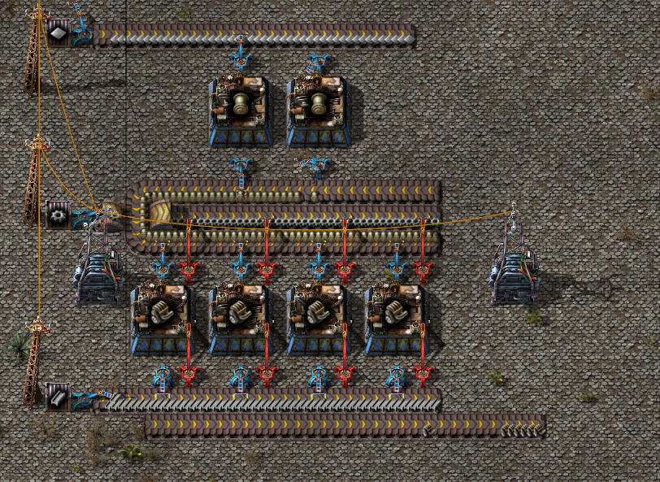
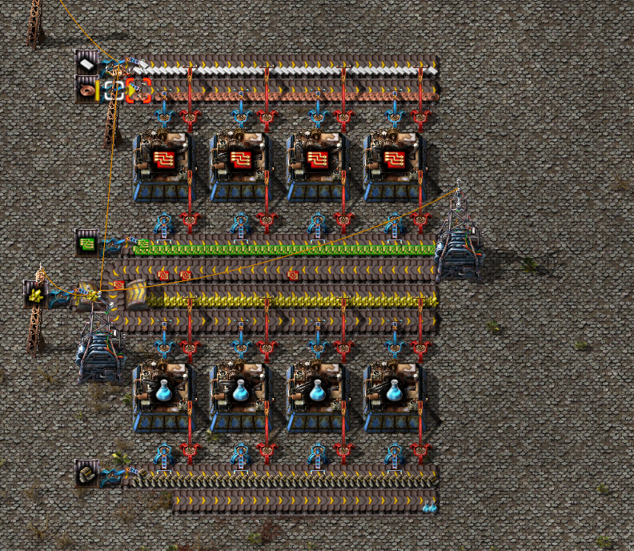

Голубые пакеты исследований

Тут показано производство пластика и серы, обратите внимание, что трубы удобнее всего пускать под землёй, так вы сможете в любой ситуации пройти мимо или же провести какие-то работы.

Здесь показано как можно установить производство двигателей, очень удобно в момент, когда у вас нет хорошей брони с экзоскелетами, можно просто сделать машину.

По аналогичной системе производим голубые пакеты.